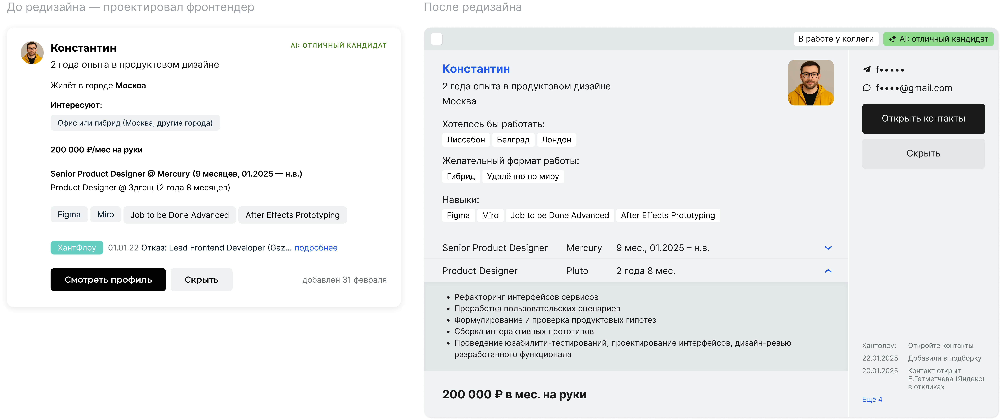

<!DOCTYPE html>
<html>
  <head>
    <meta charset="utf-8">
    <meta name="viewport" content="width=device-width, initial-scale=1.0">
    <meta property="og:type" content="article">
    <meta property="og:title" content="Зарплатный калькулятор getmatch • Артём Самсонов • Продуктовый дизайнер">
    <meta property="og:description" content="Дизайн сервиса на пересечении интересов кандидатов и клиентов">
    <meta property="og:image" content="http://artemsamsonov.com/img/case-04.jpg">
    <link href="https://fonts.googleapis.com/icon?family=Material+Icons" rel="stylesheet">
    <link rel="stylesheet"><!-- Yandex.Metrika counter --> <script type="text/javascript" > (function(m,e,t,r,i,k,a){m[i]=m[i]||function(){(m[i].a=m[i].a||[]).push(arguments)}; m[i].l=1*new Date();k=e.createElement(t),a=e.getElementsByTagName(t)[0],k.async=1,k.src=r,a.parentNode.insertBefore(k,a)}) (window, document, "script", "https://mc.yandex.ru/metrika/tag.js", "ym"); ym(88097279, "init", { clickmap:true, trackLinks:true, accurateTrackBounce:true, webvisor:true }); </script> <noscript><div></div></noscript> <!-- /Yandex.Metrika counter -->
    <title>Зарплатный калькулятор getmatch • Артём Самсонов • Продуктовый дизайнер</title>
    <script type="application/ld+json">
      {
        "@context": "https://schema.org",
        "@type": "Person",
        "name": "Артём Самсонов",
        "url": "https://artemsamsonov.com",
        "image": "https://artemsamsonov.com/og-preview.jpg",
        "sameAs": [
          "https://t.me/forrrealism",
          "https://www.linkedin.com/in/a-samsonov/"
        ],
        "jobTitle": "Ведущий продуктовый дизайнер",
        "worksFor": {
          "@type": "Organization",
          "name": "getmatch"
        }
      }
    </script>
  <link href="./css/style.bundle.css" rel="stylesheet"></head>
  <script type="application/ld+json">
    {
      "@context": "https://schema.org",
      "@type": "CreativeWork",
      "name": "Редизайн карточки кандидата getmatch",
      "alternateName": "Candidate Card Redesign getmatch",
      "headline": "Улучшение UX карточки кандидата для рекрутеров",
      "description": "Кейс о том, как я провёл редизайн карточки кандидата в getmatch. Новая карточка помогла рекрутерам быстрее анализировать информацию и увеличила количество одобрений, что привело к росту наймов и выручки.",
      "url": "https://artemsamsonov.com/getmatch-card",
      "author": {
        "@type": "Person",
        "name": "Артём Самсонов",
        "url": "https://artemsamsonov.com"
      },
      "datePublished": "2025-06-26",
      "dateModified": "2025-06-26",
      "inLanguage": "ru",
      "mainEntityOfPage": "https://artemsamsonov.com/getmatch-card",
      "image": {
        "@type": "ImageObject",
        "url": "https://artemsamsonov.com/img/getmatch-card-01.png",
        "width": 1152,
        "height": 768
      }
    }
  </script>
</html>
<body class="body_dark">
  <header class="header header_dark">
    <div class="header__logo"><a href="index.html">Артём Самсонов</a></div>
    <div class="header__menu"><a class="header__menu-elem" href="https://t.me/forrrealism">telegram</a><a class="header__menu-elem" href="https://www.linkedin.com/in/a-samsonov/">linkedin</a></div>
  </header>
  <div class="content">
    <div class="article">
      <section>
        <h1>Редизайн карточки кандидата</h1>
        <p class="article__annotation">Новая карточка в ленте рекрутеров помогла и пользователям, и бизнесу: анализ информации стал в 2 раза быстрее, а количество одобрений привело к росту наймов и, как следствие—выручки. И всё благодаря дизайну.</p>
        <div class="article__tags">
          <div class="tag--M tag">Координация UX-исследования</div>
          <div class="tag--M tag">Арт-дирекшен</div>
          <div class="tag--M tag">Постанализ</div>
        </div>
        <h3>Контекст</h3>
        <p>Проводя сезонную сессию глубинных интервью с рекрутерами, мы выявили, что на краткой карточке кандидата нет ряда важной информации. Из-за этого рекрутеры всегда открывают полный профиль в соседней вкладке.</p>
        <h3>Задача</h3>
        <p>Создать решение, которое:</p>
        <ul>
          <li>Сократит путь от просмотра информации до открытия контактов</li>
          <li>Увеличит количество одобрений</li>
        </ul>
        <h2>Решение</h2>
        <p> Провели редизайн карточки кандидата для рекрутера:</p>
        <div class="article__skill-cards">
          <div class="skill-card skill-card--case">
            <div class="skill-card__name">Подняли выше навыки</div>
            <div class="skill-card__description">96% респондентов анализировали скиллы до изучения опыта работы и отметили, что отсутствие необходмого скилла — бесповоротный редфлаг</div>
            <div class="skill-card__digit"></div>
          </div>
          <div class="skill-card skill-card--case">
            <div class="skill-card__name">Спроектировали пожелания по локациям</div>
            <div class="skill-card__description">Новая информация, которая помогает сразу оценить желания кандидата: «готов ли переехать в Москву», «стоит ли предлагать позицию в Тбилиси» — и так далее</div>
            <div class="skill-card__digit"></div>
          </div>
          <div class="skill-card skill-card--case">
            <div class="skill-card__name">Добавили детальное описание опыта</div>
            <div class="skill-card__description">100% респондентов ходили в полный профиль именно за ним. Добавили спойлером, чтобы не растягивать карточку (некоторые кандидаты пишут в них «Войну и мир»)</div>
            <div class="skill-card__digit"></div>
          </div>
          <div class="skill-card skill-card--case">
            <div class="skill-card__name">Отобразили контакты в сайдбаре</div>
            <div class="skill-card__description">Раньше открыть их можно было только в полном профиле</div>
            <div class="skill-card__digit"></div>
          </div>
        </div>
        <p class="article__image article__image"><a href="../../img/getmatch-card-01.png" target="_blank"></a></p>
        <h2>Результаты</h2>
        <div class="article__skill-cards">
          <div class="skill-card skill-card--case">
            <div class="skill-card__name">Time to Value: <span class="skill-card__metric-value">-56%</span>
            </div>
            <div class="skill-card__description">Время принятия решения сократилось с 2 минут 40 сек. до 1 минуты 10 сек. — за счёт избавления от лишнего перехода в полный профиль и быстрого доступа к важной информации</div>
            <div class="skill-card__digit"></div>
          </div>
          <div class="skill-card skill-card--case">
            <div class="skill-card__name">Task Success Rate: <span class="skill-card__metric-value">+18%</span>
            </div>
            <div class="skill-card__description">Рекрутеры стали открывать больше контактов</div>
            <div class="skill-card__digit"></div>
          </div>
          <div class="skill-card skill-card--case">
            <div class="skill-card__name">Выручка в месяц: <span class="skill-card__metric-value">+972 000 ₽</span>
            </div>
            <div class="skill-card__description">Больше открытий контактов → больше собеседований → больше наймов. А за наймы нам платили деньги</div>
            <div class="skill-card__digit"></div>
          </div>
        </div>
      </section>
    </div>
  </div>
<script type="text/javascript" src="./js/bundle.js"></script></body>